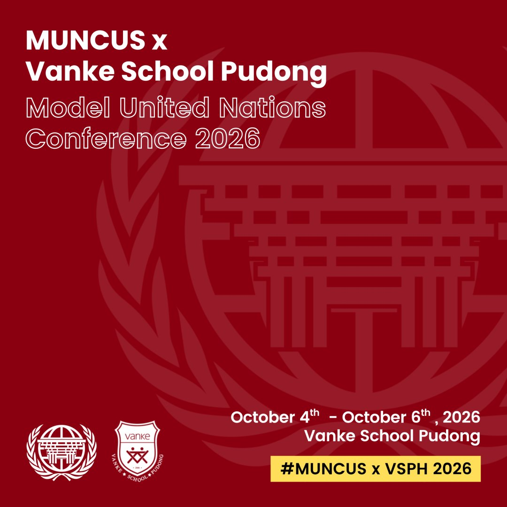

Committees & Topics
Soviet Union General Commissariat (USSRGC)
It is December 1945, and the Soviet Union stands at a crossroads where guns have fallen silent, but the challenges that remain may prove deadlier than the war itself - a shattered economy, ten million graves, occupied territories to govern, and an American nuclear monopoly that threatens to upend the global balance of power. As senior members of the Council of People’s Commissars, delegates must make the decisions that will determine whether the Soviet Union rises as the world’s defining superpower, or falls behind in a new and far more dangerous era.
United Nations General Assembly (UNGA)
The British Mandate for Palestine is expiring, and the United Nations must answer one of history’s most consequential questions: how to divide - or not divide - a land claimed by two peoples. With tensions between Arab and Jewish communities at a breaking point and Cold War powers vying for influence, delegates will thrive through bloc diplomacy, competing nationalisms, and the weight of post-Holocaust humanitarian obligations to form a resolution that will echo for future generations.
Ad Hoc: Zootopia Howling Committee
“Oh, oh, oh, oh, ohhhh… Try Everything.” Something is wrong in Zootopia - and the full story has yet to surface. At a press conference that sent shockwaves through every borough, a startling headline was made - predators, without warning or reason, were reverting to something primal. The fear spread faster than the facts. Now, this committee has been hastily assembled to investigate and manage it. But the closer you look, the more the event shifts. What is really happening in the city of Zootopia? The truth is waiting to be found.
Conference Location
Vanke School Pudong 上海浦东新区民办万科学校
No. 2-4, Lane 1700, Kangqiao Road, Pudong New Area, Shanghai
上海市浦东新区康桥路1700弄2-4号
Conference Schedule
October 4 Day 1
- Conference Registration09:00 – 11:00
- Lunch Break11:00 – 13:00
- Opening Ceremony13:00 – 14:00
- Committee Session 114:00 – 17:00
- Dinner Break17:00 – 19:00
- Committee Session 219:00 – 21:00
October 5 Day 2
- Delegate Workshop09:00 – 11:00
- Lunch Break11:00 – 13:00
- Committee Session 313:00 – 17:00
- Dinner Break17:00 – 19:00
- Gala Night19:00 – 21:00
October 6 Day 3
- Committee Session 409:00 – 11:00
- Lunch Break11:00 – 13:00
- Committee Session 513:00 – 16:00
- Closing Ceremony & Awards16:00 – 17:00
- Delegate See-offAfter 17:00
Registration Info
MUNCUS hopes to provide all delegates with an exceptional conference environment, a professional and engaging atmosphere, and a commitment to rigorous academic standards.
MUNCUS 致力于为所有代表提供卓越的会场环境、专业而富有参与感的氛围，并始终坚持严谨的学术标准。
We are dedicated to making Model United Nations accessible to all. Therefore, MUNCUS x VSPH 2026 offered free admission to all delegates.
我们始终坚信，模拟联合国应当向所有人开放。因此，MUNCUS x VSPH 2026 为所有代表提供免会费优惠。
Position papers were not required and not considered in the evaluation of delegate awards. Nonetheless, all delegates were expected to carefully review the background guide to ensure a meaningful and productive conference experience. Delegates who believed a position paper would help their preparation were more than welcome to write one.
本次大会代表无需提交立场文件，也无需担心该文件影响奖项评定。不过，我们依然鼓励大家认真阅读背景资料，做好准备，提升会场发言的深度与质量。如代表认为撰写立场文件有助于理解议题，也非常欢迎自行完成。
From your first speech to your fiercest debate, we look forward to welcoming you to the beautiful campus of Vanke School Pudong for an unforgettable MUN experience!
从你的第一次发言，到最激烈的辩论——我们期待在上海浦东新区民办万科学校美丽的校园与你相见，共同开启一场难忘的模拟联合国之旅！
Registration for MUNCUS x VSPH 2026 has closed. This article is kept here as a record of the conference.
About MUNCUS
上海模拟联合国社团联盟（MUNCUS）致力于连接上海地区模联社团，搭建资源共享与交流平台，为更多青少年提供与世界交流的机会。
The Model United Nations Club Union of Shanghai connects MUN clubs across Shanghai, building a platform for sharing resources and exchange, and giving more young people the chance to engage with the world.
To inspire the next generation.
Originally published on the MUNCUS WeChat official account. Read on WeChat →